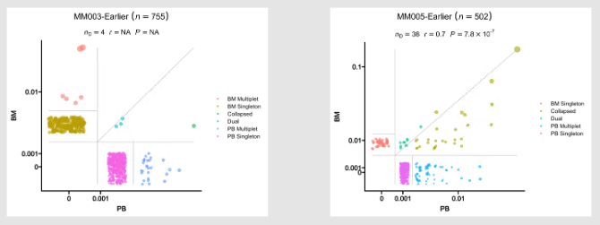

Configurations¶
In this section, we are discussing how to configure the pipeline itself and some common issues we may encounter or need to be aware of to configure individual processes. For the configurations of each process in details, please refer to the individual process pages.
As mentioned in pipen's docs, the configurations to control the pipeline can be ~/.pipen.toml and/or ./.pipen.toml. You can set the default values in those files. Additionally, you can also pass a configuration file from command line, as described in Running the pipeline section. You can override the default values in the configuration files by passing arguments from command line.
The configuration file is in toml format. A schematic example is shown below:
forks = 4
# Other pipeline configurations
# process configurations
[TOrBCellSelection]
forks = 2 # override the default value
# envs of the process
# e.g
[TOrBCellSelection.envs]
indicator_genes = ["CD3D", "CD3E", "CD3G"]
# other processes
# [ProcessName]
# ...
Tip
In the individual process pages, we will list the envs of the process. For example,
indicator_genes (list): The genes to be used to select T cells.
This means that the environment variable indicator_genes should be set as follows:
[TOrBCellSelection.envs]
indicator_genes = ["CD3D", "CD3E", "CD3G"]
Tip
An example configuration file with possible configuration items is provided in the repository as immunopipe.config.example.toml. You can refer to it when creating your own configuration file.
Attention
With pipen-args plugin, the arguments can also be passed from command line directly. For example, you can pass --TESSA.envs.python python_np1 from command line to set the python with dependencies installed for TESSA process.
We know that when a process name appears in the configuration file, the process will be enabled. However, this won't work for the arguments passed from command line. You need to make sure that the process is enabled in the configuration file first. Then you can override the environment variables from command line.
Pipeline configurations¶
There are pipeline level configurations and process level configurations. The pipeline level configurations are used to control the pipeline itself. The process level configurations set here are the default values for all the processes. You can override the default values for each process in the process level configurations.
You can check all available configuration items and more details here. Here we only list some of the most important ones. The rest ones are not recommended to change unless you know what you are doing.
Pipeline level configurations¶
name: The name of the pipeline (Default:"Immunopipe")- It will change the working directory to
./.pipen/<name>, where the pipeline information and intermediate files will be stored. - It will also change the default output directory to
./<name>-output. outdir: The output directory (Default:"./<name>-output")- The output directory is where the final results and reports are stored.
loglevel: The logging level for the logger (Default:"info")plugin_opts: The options for the plugins.- Following
pipenplugins are installed withimmunopipe. You may check the links for more details. pipen-board: Visualizing configuration and running of pipen pipelines on the web.pipen-verbose: Adding verbosal information in logs for pipen.pipen-runinfo: Generating running information for jobs in pipen pipelines.pipen-filters: Adding a set of useful filters for pipen templates.pipen-args: Command line argument parser for pipenpipen-annotate: Using docstring to annotate pipen processes.pipen-report: Generating reports for pipen pipelines.pipen-log2file: Logging to files for pipen pipelines.pipen-cli-run: Running pipen processes/process groups from command line.scheduler: The scheduler to use (Default:"local")scheduler_opts: The options for the scheduler.immunopipeis implemented usingpipen, which is backended byxqute. Supported schedulers and options are listed here.- See also
How to run the pipeline on a cluster?for more details.
Output and working directory¶
The output directory is the directory where the final results are stored. The working directory is the directory where the pipeline information and intermediate files are stored. By default, the output directory is ./<name>-output and the working directory is ./.pipen/<name>.
The output of processes with final results will be stored in the output directory in sub-directories named after the processes. For example, the output of SeuratClusteringOfAllCells will be stored in ./<outdir>/SeuratClusteringOfAllCells. This is also a special subdirectory named REPORTS that contains the reports of the pipeline. By visiting the <outdir>/REPORTS/index.html with a web browser, you can check the reports of the pipeline.
You can change the output directory by setting outdir or name in the configuration file. For example, if you want to change the output directory to ./output, you can set the configurations as follows:
outdir = "./output"
If you change the pipeline name:
name = "my-pipeline"
Then the output directory will be changed to ./my-pipeline-output.
Note
If both outdir and name are set, outdir will be used.
You can do the similar thing to change the working directory. However, you are NOT recommended to change the working directory, especially if you are using pipen-board. This is because that the plugin scans ./.pipen/<name> to get the information for the previous run of the pipeline. If you change the working directory, the plugin will not be able to find the information for the previous run.
Tip
What if you want to change the working directory anyway? The recommended way is to create a symbolic link to the working directory. For example, if you want to change the working directory to /path/to/the/real/working/directory, you can do:
ln -s /path/to/the/real/working/directory ./.pipen
Tip
You can also then debug the pipeline by inspecting the real scripts in the working directory that run for the jobs of each process at ./.pipen/<name>/<process-name>/<job-index>/job.script.
You can also find the other information for the jobs at ./.pipen/<name>/<process-name>/<job-index>/, including the stdout (job.stdout) and stderr (job.stderr) of the jobs, the exit code of the jobs (job.rc), etc.
Process level configurations¶
cache: Should we detect whether the jobs are cached. Iftrue, the jobs will be skipped if the output files exist and newer than the input files. (Default:true)error_strategy: The strategy to handle the errors.halt: Any failure will just halt the entire pipeline (default)ignore: Ignore the error and keep running (assuming the job runs successfully anyway)-
retry: Retry to job running. Afternum_retriestimes of retrying, if the job is still failing, halt the pipeline. -
num_retries: The number of retries for the jobs. (Default:3) forks: How many jobs to run simultaneously? (Default:1)scheduler: The scheduler to use. If not specified, the scheduler specified in the pipeline level configurations will be used.scheduler_opts: The options for the scheduler. If not specified, the scheduler options specified in the pipeline level configurations will be used.- See also
How to run the pipeline on a cluster?for more details.
To know more about the configuration items for the pipeline, you can also read the pipen docs.
Enabling/disabling processes¶
By default, only the essential processes are enabled.
If scTCR-/scBCR-seq data is avaiable, these processes include:
SampleInfoScRepLoadingSeuratPreparingSeuratClusteringScRepCombiningExpressionClusterMarkersSeuratClusterStatsClonalStats
If only scRNA-seq data is available, these processes include:
SampleInfo(orLoadingRNAFromSeuratif loading from existingSeuratobjects)SeuratPreparing(or skipped if loading from existingSeuratobjects withLoadingRNAFromSeurat.envs.preparedorLoadingRNAFromSeurat.envs.prepared.clusteredset totrue)SeuratClustering(or skipped if loading from existingSeuratobjects withLoadingRNAFromSeurat.envs.clusteredset totrue)ClusterMarkersSeuratClusterStats
See also Routes of the pipeline for more details.
To enable optional processes, you just need to add the corresponding sections for the processes in the configuration file. As long as the process name appears in the configuration file, the process will be enabled. For example, if you want to add module scores (e.g. cell activation score) to the Seurat object, you can add the following lines to the configuration file:
[ModuleScoreCalulator.envs.modules.TCell_Terminal_Differentiation]
features = ["TIGIT", "PDCD1", "CD274", "CTLA4", "LAG3", "HAVCR2", "CD244", "CD160"]
Tip
You may find out that for some processes, the default configurations are good enough for you to run. For example, CDR3Clustering is not enabled by default. If you don't change any configurations (by not putting in the configuration file nor changing any items on the web interface of pipen-board) for the process, it will not be triggered. However, the default configurations are good enough for you to run the process. To enable it, you can either add this process manually in the configuration file:
# ... other configurations
[CDR3Clustering]
or if you are using pipen-board, you can change a configuration item that does not actually affect the process. For example, you can change the forks of the process to 2, instead of the default 1, since the process is a single-job process. Then the process will be put in the configuration file and will be enabled.
[CDR3Clustering]
forks = 2
Minimal configurations¶
The minimal configurations are just the configurations with the input file:
[SampleInfo.in]
infile = [ "samples.txt" ]
The input file is the metadata file mentioned in Preparing the input.
With the minimal configurations, the pipeline will have the essential processes enabled, depending on whether scTCR-/scBCR-seq data is available or not.
You can also check the example report here to see what you will get with the minimal configurations, with scTCR-/scBCR-seq data available.
Environment variable types¶
The types of environment variables are annotated in the brackets next the name of the environment variables. For example, the type of envs.indicator_genes of TOrBCellSelection is list, and it's annotated as:
- indicator_genes (list): The genes to be used to select T cells.
By default, the type of environment variables is string. The annotated types are helpful for the environment variables to be passed from the command line. It defines the argument and helps parse the argument from the command line. It is also useful to define the input elements from the pipen-board web interface and parse the values passed from the web interface as desired types.
The following types are supported:
string: The default type, the values will be used as strings.int: The values will be parsed as integers.float: The values will be parsed as floats.flag: The values will be parsed as boolean values.list/array: The values will be parsed as lists.- You can also see the
itypeof some environment variables, that specifies the type of the elements in the list. It must be atomatic types, such asint,float,string, andflag. json: The values will be reciived as JSON strings and parsed as dictionaries (in python).choice/choices: The value should be chosen from one of the choices listed as sub-items.mchoice/mchoices: The value should be chosen from one or more of the choices listed as sub-items.ns/namespace: There are sub-items for the value. The sub-items will be parsed as key-value pairs.
Understanding the data¶
Understanding how the data is presented in the pipeline is helpful for the configuration, especially for the processes, such as SeuratClusterStats and ClonalStats. The configurations of this kind of processes are relying on the metadata.
You can refer to the individual process pages for more details. Here we just give an introduction of how it works to set the configurations.
The assay of the Seurat object¶
The Seurat object is the main object used in the pipeline. You can have multiple assays in the Seurat object. While preparing the Seurat object at SeuratPreparing process, the default assay is determined. If envs.use_sct is true, meaning SCTransform is used, the default assay will be SCT. If you are using cca or rpca integration, integrated will be used as the default assay. Otherwise, the default assay will be RNA. For downstream processes using the expression values, we provide an option to specify the assay to use. However, the default assay is used. Unless you know what you are doing, you are not recommended to change the default assay.
Using existing columns in the metadata¶
In most cases, you can use the existing columns in the metadata to set the configurations. For example, if you want to plot the clone residency for each patient/subject, you need to specify the column name of the sample ID, as well as the column with the paired sample information (i.e. tumor vs blood).
Suppose the metadata (sitting in seurat_obj@meta in R for example) is as follows (showing sample-level information only):
| Subject | Source |
|---|---|
| MM003-Eariler | BM |
| MM003-Eariler | PB |
| MM005-Eariler | BM |
| MM005-Eariler | PB |
Then you can set the configurations as follows:
[SeuratClusterStats.envs.cases.CloneResidency]
viz_type = "residency"
split_by = "Subject"
group_by = "Source"
groups = ["BM", "PB"]
And you will get the following plots:

Mutating the metadata¶
Sometimes, you may want to mutate the metadata to get the desired information. Of course, you can have them prepared in the input file, as those extra columns with meta information will be attached to the object automatically. See Preparing the input for more details. However, sometimes the metadata is specific to some processes, you may not want to have them prepared in the input file to get all processes contaminated. Moreover, those derived columns are usually based on the existing columns, so that is also helpful to create them on the fly to keep the input file clean.
In such case, for example, if you want to plot the clone residency for two groups (e.g. BM-Pre vs. BM-Post) of samples for the same group (e.g. A). However, the Source and Timepoint information are not in a single column of metadata. Here is when mutaters come in place.
Suppose the metadata is as follows:
| Sample | Group | Source | Timepoint |
|---|---|---|---|
| MM003 | A | BM | Pre |
| MM003 | A | BM | Pre |
| MM005 | A | BM | Post |
| MM005 | A | BM | Post |
| ... | ... | ... | ... |
Then you can set the configurations as follows:
[ClonalStats.envs.mutaters]
SampleGroup = "paste0(Sample, '-', Timepoint)"
[ClonalStats.envs.cases.CloneResidency]
viz_type = "residency"
split_by = "Group"
group_by = "SampleGroup"
groups = ["BM-Pre", "BM-Post"]
Then you will get a clone residency plot for group A with BM-Pre as x-axis and BM-Post as y-axis.
The key-value pairs of mutaters are passed to dplyr::mutate() function. The actual code to mutate the metadata is as follows:
df %>% mutate(SampleGroup = paste0(Sample, '-', Timepoint))
So, for this kind of advanced configurations, you need to have some knowledge of dplyr in R.
You also need to pay attention to the keys of mutaters. Basically, the keys are the column names you want to create. So you need to make sure that the column names are not in the metadata already. Otherwise, the existing columns will be overwritten.
For scRNA-seq data, the existing column names of the metadata are:
orig.identnCount_RNAnFeature_RNA
and the meta columns in the input file. See also Preparing the input for more details.
There could also be some other columns, depending on the previous processes. For example, if you have the cells clustered, there will be a column named seurat_clusters in the metadata.
For scTCR-/scBCR-seq data, Sample is the only existing column in the metadata after loaded. Then the meta columns from the input file will be attached to the metadata.
The best practice is to use a prefix for the column names you want to create. For example, if you want to create a column named Sample, you can use my_Sample instead. Then you can make sure that the column names are not in the metadata already.
The other thing you need to pay attention to is that you should try to avoid . or - in the column names. For example, if you want to create a column named Sample-Source, you can use Sample_Source instead. This is because that the column names will be used as the keys of the environment variables, and some processes will translate - into .. See also Namespace environment variables for more details.
Filtering/Subsetting the data¶
In most processes where we need to filter the data, we don't provide an option for you to set the expression for dplyr::filter(). Instead, you can make use of the mutaters to create a column for filtering. For example, if you only want to plot clone residency for only one patient/subject (e.g. MM003-Eariler) in ClonalStats, you can set the configurations as follows (suppose we have Sample and Source columns in the metadata):
[SeuratClusterStats.envs.mutaters]
SingleSample = "if_else(Sample == 'MM003-Eariler', Sample, NA)"
[SeuratClusterStats.envs.stats.CloneResidency]
split_by = "SingleSample"
group_by = "Source"
groups = ["BM", "PB"]
Then you will get only one plot for MM003-Eariler, but not for MM005-Eariler. The NAs will be filtered out automatically.
Namespace environment variables¶
There are some enviroment variables marked as namespace, which means that you can have sub-keys for them. For example, the envs.SCTransform of SeuratClusteringOfAllCells process is a namespace environment variable. It takes the arguments of Seurat::SCTransform() function. The names of arguments have dot (.) in them, such as do.scale, do.center, seed.use, etc. In the configuration file, we need to use dash (-) instead of dot (.) to set the values for these arguments. For example, if we want to set do.scale to TRUE, we need to set do-scale to true in the configuration file.
[SeuratClusteringOfAllCells.envs.SCTransform]
do-scale = true
This is because that we use pipen-args plugin backended by argx to parse the command line arguments, including the configuration file. If we use . directly in the configuration file:
[SeuratClusteringOfAllCells.envs.SCTransform]
do.scale = true
Then the pipen-args will parse it as do is the key and scale is the sub-key, and the above configuration will be parsed as:
[SeuratClusteringOfAllCells.envs.SCTransform]
do = { scale = true }
which is not what we want.
The reason why . is parsed as sub-key is that we want the argument to be able to be passed from command line. For example, if we want to set do.scale to TRUE from command line, we can do:
> immunopipe --SeuratClusteringOfAllCells.envs.SCTransform.do-scale true
If we use . instead of -:
> immunopipe --SeuratClusteringOfAllCells.envs.SCTransform.do.scale true
Then the pipen-args will parse it as
[SeuratClusteringOfAllCells.envs.SCTransform]
do = { scale = true }
again.
Tip
You don't need to worry about which environment variables are namespace ones. We will mention it in the individual process pages and the description of the environment variables in pipen-board configuration descriptions.
Multi-casing design¶
Some environment variables are designed to support multiple cases. However, in most cases, we only need to set the values for the default case. In such cases, the environment variable is usually a namespace environment variable with the sub-keys needed for the default case. In order to support multiple cases, a sub-key cases is added to the namespace environment variable. The cases is a dictionary (key-value pairs), where the keys are the names of the cases, and the values are the sub-keys for the corresponding cases. For example, the envs.group_by of ScFGSEA process:
[ScFGSEA.envs]
group_by = "Group"
cases = {}
If cases is empty, the default case will be added automatically. The name of the default case is GSEA. So the above configuration is equivalent to:
[ScFGSEA.envs]
group_by = "Group"
cases = { GSEA = {} }
If you want to add more cases, you can add them to the cases dictionary. For example, if you want to add a case named CASE1, you can do:
[ScFGSEA.envs]
group_by = "Group"
cases = { GSEA = {}, CASE1 = {} }
Then you can set the values for the default case and CASE1 case. For example, if you want to set the ident_2 to g3 for the default case and g4 for CASE1, you can do:
[ScFGSEA.envs]
group_by = "Group"
ident_1 = "g1"
cases = { GSEA = { ident_2 = "g3" }, CASE1 = { ident_2 = "g4" } }
If a key in a case is not specified, the value in [ScFGSEA.envs] case will be used. In the above example, group_by = "Group" and
ident_1 = "g1" will be used for both GSEA and CASE1 cases.
Security alert¶
Danger
Note that some configuration items will be evaluated in the scripts directly. For example, the mutaters will be passed to R scripts, parsed and evaluated so that they can be used in dplyr::mutate(). Even though some were evaluated by rlang, not all of them are safe. Some of them are evaluated directly. For example, one could inject malicious code in the expressions passed by dplyr::filter(). For example, in the script:
df %>% filter({{ expression }})
The expected expression is something like Sample == "Sample001". However, one could pass Sample == "Sample001"); system("cat /etc/passwd") to the expression, which will be evaluated as:
df %>% filter(Sample == "Sample001"); system("cat /etc/passwd")
This will cause the pipeline to run the command cat /etc/passwd in the shell. This is just an example. One could do more harm by injecting malicious code.
When you give acess of composing the configuration file to others or the public (not recommended), either via the command line or the web interface by pipen-board, you need to be careful about the security issues.